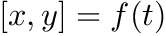

This page lists release notes for the diferent version of JKQTPlotter
trunk/master
trunk: Overview
Changes, compared to v2019.11 include:
-
fixed issue #34: Skip drawing the line for negative values in log plots, thanks to user:certik
-
fixed issue #38: Buffer overflow, thanks to user:zertyz
-
fixed issue #43: jkqtp_format() had undefined behaviour, thanks to user:Makis42
-
fixed issue #41: Build error when JKQtPlotter_BUILD_INCLUDE_XITS_FONTS set to OFF , thanks to user:smistad
-
fixed issue #37: CMake installs things into $PREFIX/doc/*.txt , thanks to user:certik
-
fixed issue #45: Build error on mac jkqtfastplotter.cpp:342:28: Variable has incomplete type 'QPainterPath', thanks to user:abdedixit
-
renamed/breaking change: renamed JKQTPColorPaletteStyleAndToolsMixin::setPalette() -> JKQTPColorPaletteStyleAndToolsMixin::setColorPalette()
-
removed/breaking change: removed the usage of some deprecated functions and objects (e.g. QMatrix)
-
removed/breaking change: removed the overlay elements (derived from JKQTPOverlayElement), which were not very well set up and are more confusing than useful.
-
improved/breaking change: geometric objects now use an adaptive drawing algorithm to represent curves (before e.g. ellipses were always separated into a fixed number of line-segments)
-
improved: constructors and access functions for several geometric objects (e.g. more constructors, additional functions to retrieve parameters in diferent forms, iterators for polygons, ...)
-
improved/breaking change: reworked class hierarchy of parsed function plots and declared several setters as slots.
-
improved/breaking change: reworked class hierarchy of bar & impulse charts.
-
improved/breaking change: reworked class hierarchy of range charts.
-
improved/breaking change: reworked class hierarchy of special line (step) graphs.
-
improved/breaking change: reworked class hierarchy of filled line graphs.
-
improved/breaking change: reworked class hierarchy of range plot elements (JKQTPVerticalRange and JKQTPHorizontalRange).
-
improved/breaking change: reworked graph Base-Classes (promoted several setters to slots, added Q_PROPERTY- and Q_ENUM-declarations...)
-
improved/breaking change: made more functions and function parameters const
-
bugfixed/improved: aspect ratio handling in JKQTPlotter.
-
new: added geometric plot objects JKQTPGeoArrow to draw arrows (aka lines with added line-end decorators, also extended JKQTPGeoLine, JKQTPGeoInfiniteLine, JKQTPGeoPolyLines to draw line-end decorator (aka arrows)
-
new: all geometric objects can either be drawn as graphic element (i.e. lines are straight line, even on non-linear axes), or as mathematical curve (i.e. on non-linear axes, lines become the appropriate curve representing the linear function, connecting the given start/end-points). The only exceptions are ellipses (and the derived arcs,pies,chords), which are always drawn as mathematical curves
-
new: a new graph class JKQTPXYFunctionLineGraph draws parametric 2D curves (  ), see Example (JKQTPlotter): Plotting Parametric Mathematical Curves as Line Graphs for an example
-
new: added several new copy/set-functions to JKQTPDatastore
-
new: added JKQTPlotter signal, when widget was resized
-
new: added JKQTPFilledHorizontalRangeGraph, complementing JKQTPFilledVerticalRangeGraph
trunk: Download
This release is available from:
v2019.11: Major rework of the library
Starting in summer 2018, JKQTPlotter received some major workover. During this, it lost compatibility to the QuickFit 3.0 code base.
v2019.11: Overview
Changes, compared to v2018.08 include:
-
new: CMake-base build, which deprecated the QMake-build
-
new: added QMake-Projects for static and for shared library builds
-
new: extensive set of Examples and Tutorials
-
new: checked builds with continuous integration from AppVeyor: https://ci.appveyor.com/project/jkriege2/jkqtplotter/branch/master
-
new/update: support for building with Microsoft Visual Studio (Win), MinGW (Win), GCC (Linux/MacOS)
-
update: massively improved (doxygen-generated) Online-Documentation (http://jkriege2.github.io/JKQtPlotter/index.html) (automatically generated after each commit using ravis CI)
-
update: refactoring of the library's directory structure
-
update: refactoring/renaming of API, including the function anming scheme and class names
-
changed: using static const variables instead of
#define for fixed default values (e.g. JKQTPImageTools::LUTSIZE, JKQTPImageTools::PALETTE_ICON_WIDTH, JKQTPlotterDrawinTools::ABS_MIN_LINEWIDTH, JKQTMathText::ABS_MIN_LINEWIDTH ...)
-
Updates to JKQTPlotter:
-
new: added JKQTPSingleColumnSymbolsGraph for single-column data, e.g. drawn as (random) scatter or bee-swarm or rug plots
-
new: stacked barcharts with JKQTPBarVerticalStackableGraph, JKQTPBarHorizontalStackableGraph
-
new: use/support of C++11 features (e.g.
std::function<> and lambda functions in JKQTPXFunctionLineGraph / JKQTPYFunctionLineGraph )
-
new: optional OpenCV interface
-
new: optional CImg interface
-
new: Styling System for JKQTPlotter
-
new: added debugging option, which surrounds different regions with visible rectangles (JKQTBasePlotter::enableDebugShowRegionBoxes() )
-
new: frames (plot viewport, key/legend ...) may be rounded off at the corners
-
new: diverse new styling options (default font name/size ...)
-
new: additionl options for styling coordinate axes
-
new: Mix-In classes to unify plot styleing functions (setters/getters) in all graphs
-
new: additional options for graph filling (color gradients, textures, ...) as provided by QBrush
-
new: added a general feature to JKQTPPlotElement which allows to show a graph in a highlighted state (if supported by the derived graph class!)
-
new: JKQTPXYParametrizedScatterGraph: added functors to transform column values into symbol type+size and line-width to give even more control
-
new: user-interaction tool that shows coordinates of data points near the current mouse position (when mouse is dragged, while mouse button is pressed), see: jkqtpmdaToolTipForClosestDataPoint
-
new: user-interaction tool that measures distances and angles when mouse is dragged, while mouse button is pressed), see: jkqtpmdaRuler
-
new: advanced styling options for boxplots + example for the styling: Example (JKQTPlotter): Styling different aspects of boxplots
-
new: notched boxplots, see: Example (JKQTPlotter): Styling different aspects of boxplots
-
new: several new plot symbols, see: JKQTPGraphSymbols
-
new: Statistics library with functions to calculate histograms, regression, kernel density estimates, ... see: Statistical Computations
-
new: iterator interface and improved documentation for JKQTPDatastore
-
new: violin plots (see Example (JKQTPlotter): Violin Plots )
-
changed: removed old selection-code and replaced by general highlighting feature
-
changed: JKQTPStepHorizontalGraph has been renamed to JKQTPSpecialLineHorizontalGraph (vertical variants also) and have gained additional features (baseline for filling and drawing of symbols)
-
changed: filled curve graphs (e.g. JKQTPSpecialLineHorizontalGraph) are now merely a specializedly initialized JKQTPSpecialLineHorizontalGraph
-
removed: Removed datarange-feature
-
update: reworked user interactions API
-
update: reworked error indicator base classes
-
update: improvements to contour plots (e.g. highlighting single contour levels, split into a class for simple C-arrays [JKQTPContourPlot] and one for image data in a JKQTPDatastore column [JKQTPColumnContourPlot]) + added example, see JKQTPColumnContourPlot and Example (JKQTPlotter): Contour Plots
-
fixed: colorbars at top were positioned over the plot label
-
fixed: RGB-image plots now work properly with inverted axes (image is inverted, befor image was not shown at all)
-
Updates to JKQTMathText:
-
new: slanted fractions (
\sfrac{}{}, \stfrac{}{})
-
update/fix: several general improvements and bugfixes
-
update/fix: improved error handling
-
update: updated contained version of STIX fonts, better handling of different STIX versions
-
update: improved documentation
v2019.11: Download
This release is available from:
v2018.08: Minor Modifications (Final QuickFit3-compatible Version)
v2018.08: Overview
This is the final version of JKQTPlotter, which is still compatible with the QuickFit 3.0 code base. It contains minor changes as compared to v2015.10:
- new: added Qt data model to switch graphs on/off
- update: some improvements to test programs
v2018.08: Download
This release is available from:
v2015.10: Initial Release
v2015.10: Overview
This is the initial release of the library. It was developed initially as part of QuickFit 3.0 and then separated out into a separate repository.
v2015.10: Download
This release is available from: